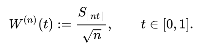
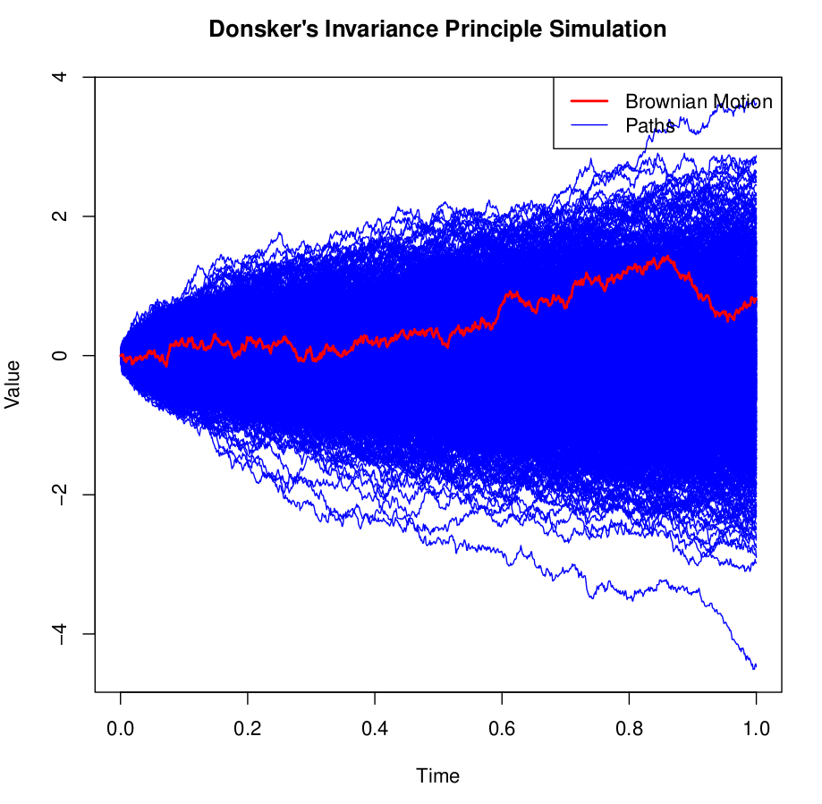

The Functional CTL (Donsker's Invariance Principle)
In probability theory, Donsker's theorem (also known as Donsker's invariance principle, or the functional central limit theorem), named after Monroe D. Donsker, is a functional extension of the central limit theorem.
Let \(X_1, X_2, X_3, \ldots\) be a sequence of independent and identically distributed (i.i.d.) random variables with mean 0 and variance 1. Let \(S_n := \sum_{i=1}^n X_i\). The stochastic process \(S := (S_n)_{n\in\N}\) is known as a random walk. Define the diffusively rescaled random walk (partial-sum process) by

The central limit theorem asserts that \(W^{(n)}(1)\) converges in distribution to a standard Gaussian random variable \(W(1)\) as \(n \to \infty\). Donsker's invariance principle extends this convergence to the whole function \(W^{(n)} := (W^{(n)}(t))_{t\in [0,1]}\). More precisely, in its modern form, Donsker's invariance principle states that: As random variables taking values in the Skorokhod space \(\mathcal{D}[0,1]\), the random function \(W^{(n)}\) converges in distribution to a standard Brownian motion \(W := (W(t))_{t\in [0,1]}\) as \(n \to \infty\).
Proof
The main idea is to embed the sequence of random variables \(X_1, X_2, \ldots, X_n\) in the same probability space as a Brownian motion, ensuring that the scaled partial sums \(S_n^*\) closely resemble the behavior of a scaled Brownian motion. The rough sketch proceeds as follows:
-
Start with a standard Brownian motion \(B_t\) and define the stopping times \(T_n\) at which \(B_t\) intersects the horizontal integer lines \(\{B_t = n : n \in \mathbb{Z}\}\).
Formally, set \(T_1 := \inf\{t : |B_t| = 1\}\) and \(T_{n+1} := \inf\{t > T_n : |B_t - B_{T_n}| = 1\}\), where \(T_n\) is a stopping time.
-
Utilize Skorokhod embedding, which asserts the existence of a stopping time \(T\) such that \(B_T\) follows the law of a random variable \(X\) with \(E[X] = 0\), \(E[X^2] < \infty\), and \(E[T] = E[X^2]\).
Let \(X\) be a real random variable with mean 0 and variance 1. Define \(T_1\) such that \(E[T_1] = 1\) and \(B_{T_1}\) has the same distribution as \(X\).
Similarly, define \(T_0^2\) with \(E[T_0^2] = 1\) and \(B_{T_0^2}\) having the same distribution as \(X\). Set \(T_2 = T_1 + T_0^2\) with \(E[T_2] = 2\).
Continue this process to inductively define a sequence of stopping times \(T_1 < T_2 < \ldots < T_n\) such that \(S_n = B_{T_n}\), meaning the Brownian motion with stopping times \(T_n\) has the same distribution as the simple random walk (SRW) described by \(S_n\).
-
Neglecting technical details, having found a suitable embedding with the desired properties, the key result is that, after rescaling our Brownian motion, the difference \(\sqrt{n} \left(B_{nt}/\sqrt{n} - S_n^*\right)\) becomes negligible as \(n \to \infty\). This implies the convergence in distribution of the scaled empirical process to a standard Brownian bridge.
For more details, visit https://www.math.utah.edu/~davar/ps-pdf-files/donsker.pdf
Simulation
We can observe a simulation of random walks in the Homework 7
